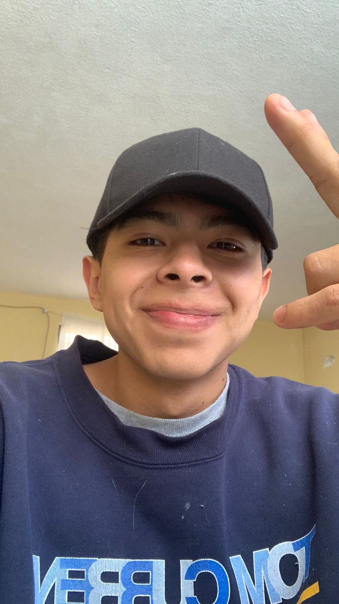

Jose Jaaziel Garcia Sanchez
Web Developer
Contact Info
- +52 771-178-2356
- jaazielgarciasanchez@gmail.com
- +52 771-178-2356
- www.linkedin.com/in/jaaziel-garcia
- Atotonilco el grande, HIdalgo
Education
-
2018 - 2021
Programador Analista
Centro de Bachillerato Tecnológico industrial y de servicios
-
2022 - Trunca
Lic. Economia
Universidad Autonoma del Estado de Hidalgo
-
2022
Certificado UX/UI
Certificacion Udemy
Languages
- English
- Español
- French
Profile
-
1.- Java Script / TypeScrip
-
2.- HTML / CSS / SQL Base de Datos MySQL
-
3.- Administración de proyectos con SCRUM, Gpo CARSO.
-
4.- Desarrollo de UX-UI experiencias de usuario con Figma 2022 en proyectos de software, por Google.
Experience
Febrero-2023
Junio-2023
Java Script/ HTML/CSS
• Desarrollo de proyectos Frontend.
Julio-2022
Noviembre-2022
Android /Kotlin
• Desarrollo de proyectos en Android Kotlin, consumiendo API/REST con Retrofit.
Noviembre-2021
Septiembre-2022
Soporte técnico de software
• SYSPACH.
Marzo
Junio-2022
Trading
• Operador • Creación de una cuenta virtual para la gestión de carteras de inversión (compra- venta) y seguimiento de Trading, plataforma GTM+.
Julio
Agosto-2022
UX-UI
• Líder de diseño • Proyecto de la Creación de un prototipo de Urna electrónica para la OPLE Veracruz en el Instituto Tecnológico Superior de Poza Rica.
Agosto
Septiembre-2022
UX-UI
• Líder de diseño • Proyecto de Software, Desarrollo de Sistema para el control de Capacitación docente, ITSPR
Professional Skills
Html
CSS
JavaScript
C#
interest
- Leer
- Ejercicio
- Video juegos
- Peliculas